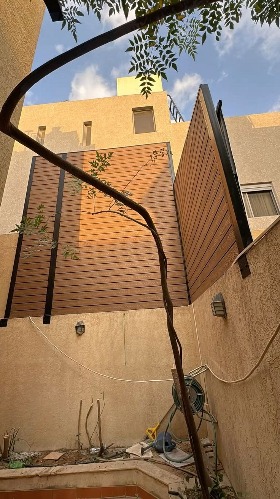

سواتر WPC (Wood Plastic Composite) هي الثورة الهادئة في عالم السواتر — تمنحك جمال الخشب الطبيعي الدافئ بدون عيوبه: لا تعفّن، لا حشرات، لا تشقق، لا حاجة للدهان المتكرر. مؤسسة سواتر المدينة توفر وتركب سواتر WPC بأعلى المواصفات في المدينة المنورة.

سواتر WPC بني بملمس خشبي حقيقي — سور حديقة في حي الناظم، المدينة المنورة
ما هو خشب WPC؟
WPC اختصار لـ Wood Plastic Composite — مادة مركبة تُصنَع من مزيج ألياف الخشب الطبيعي (30-70%) والبوليمرات البلاستيكية (30-70%) مع إضافات خاصة مقاومة للأشعة فوق البنفسجية والفطريات والحشرات. الناتج مادة تحاكي مظهر الخشب الطبيعي تمامًا لكنها تتفوق عليه في الأداء والمتانة.
دخل WPC سوق السواتر والديكور الخارجي بقوة في السنوات الأخيرة وبات الخيار المفضل لأصحاب الفلل الراقية والمشاريع التجارية الفاخرة في المدينة المنورة، نظرًا لأدائه الاستثنائي في المناخ الحار الجاف.
مميزات سواتر WPC الرئيسية
مقاومة الحرارة الشديدة
يتحمل حتى 70 درجة مئوية دون تشوه أو تشقق
مقاومة الحشرات
لا نمل أبيض، لا خنافس، لا أي حشرة تتلف الخشب
مقاومة الرطوبة
لا تمتص الماء ولا تتعفن حتى في الأجواء الرطبة
مقاومة الأشعة UV
لا يبهت اللون لسنوات طويلة في الشمس المباشرة
مظهر خشبي فاخر
ملمس وألوان تحاكي الخشب الطبيعي بدقة عالية
صيانة شبه معدومة
لا دهان، لا معالجة، فقط تنظيف بالماء والصابون
صديق للبيئة
يستخدم ألياف خشبية معاد تدويرها في تصنيعه
عازل صوتي
يخفف ضجيج الشارع أكثر من الحديد والألمنيوم
مقارنة سواتر WPC مع الحديد والخشب الطبيعي
| المعيار | WPC موصى به | حديد مجلفن | خشب طبيعي |
|---|---|---|---|
| مقاومة الحرارة | ممتازة ✅ | جيدة ⚠️ | ضعيفة ❌ |
| مقاومة الرطوبة | ممتازة ✅ | متوسطة ⚠️ | ضعيفة ❌ |
| مقاومة الحشرات | ممتازة ✅ | ممتازة ✅ | ضعيفة ❌ |
| المظهر الجمالي | خشبي دافئ ✅ | معدني عصري | طبيعي فاخر ✅ |
| متطلبات الصيانة | شبه معدومة ✅ | طلاء كل 5-7 سنوات | عالية جدًا ❌ |
| العمر الافتراضي | 20-25 سنة ✅ | 15-20 سنة | 5-10 سنوات ❌ |
| التكلفة الأولية | مرتفعة نسبيًا | متوسطة ✅ | متوسطة |
| التكلفة على المدى البعيد | الأقل ✅ | متوسطة | الأعلى ❌ |
| العزل الصوتي | جيد ✅ | ضعيف | جيد ✅ |

سواتر WPC بني دافئ مركبة على الجدار الخارجي — حي العقيق، المدينة المنورة
أنواع وأشكال سواتر WPC
ساتر WPC أفقي كلاسيكي
شرائح WPC أفقية بعرض 14-20 سم مع فجوات منتظمة بينها. الأكثر انتشارًا في الفلل السكنية — يمنح إحساسًا بالاتساع الأفقي ويُبرز حدود المساحة بأناقة. متاح بعدة ألوان أبرزها: البني الكلاسيكي، الرمادي الدافئ، والبيج الرملي.
ساتر WPC عمودي حديث
شرائح عمودية تمنح إحساسًا بالطول وتُضفي طابعًا معاصرًا. مناسب جدًا لواجهات المكاتب والمحلات التجارية والفنادق الراقية. يمكن تركيبه بفجوات أو بإغلاق كامل حسب درجة الخصوصية المطلوبة.
ساتر WPC مع إضاءة LED
تُدمج فيه إضاءة LED خلف الشرائح أو بينها لإضفاء جمال استثنائي ليلًا. الأنسب لمداخل الفلل الفاخرة، وحدائق المطاعم، والمناطق الترفيهية والضيافة.
ساتر WPC بعناصر معدنية مدمجة
مزيج من شرائح WPC مع إطارات أو تفاصيل حديدية أو ألمنيوم. يجمع بين دفء الخشب وحدة المعدن في تصميم معاصر متوازن. شائع في المشاريع الراقية بأحياء العقيق والسلام والعزيزية بالمدينة المنورة.
إيجابيات وسلبيات WPC — بصراحة
✅ المميزات
- مظهر خشبي فاخر وجمالي
- عمر افتراضي طويل (20+ سنة)
- صيانة شبه معدومة
- مقاوم للحشرات والتعفن والرطوبة
- مقاوم للأشعة فوق البنفسجية
- عازل صوتي جيد
- صديق للبيئة
- خيارات ألوان وأشكال متعددة
⚠️ نقاط يجب معرفتها
- تكلفة أولية أعلى من الحديد
- يتمدد قليلًا في درجات الحرارة العالية جدًا (طبيعي ومحسوب في التركيب)
- لا يُعاد طلاؤه بألوان مختلفة بعد التركيب
- يحتاج تركيبًا متخصصًا لضمان التمدد الصحيح
التطبيقات الأنسب لسواتر WPC في المدينة المنورة
- أسوار الفلل والمنازل: يمنح الفيلا طابعًا راقيًا ومتميزًا بين الجيران
- حدائق الفلل: ساتر حديقة WPC يخلق فضاءً خاصًا دافئًا ومريحًا
- أسطح المنازل: حاجز سطح خفيف الوزن يوفر الخصوصية بمظهر فاخر
- مسابح الفلل: مقاومته للرطوبة يجعله الأمثل للمناطق المحيطة بالمسبح
- مطاعم وكافيهات: يخلق أجواءً دافئة وطبيعية تجذب الزبائن
- واجهات المكاتب: يمنح الواجهة التجارية طابع الرقي والتميز
- الشاليهات الساحلية في ينبع: مقاومته للملوحة تجعله الأنسب للبيئة الساحلية
أسعار سواتر WPC في المدينة المنورة 2026
| نوع الساتر | الارتفاع | السعر للمتر الطولي |
|---|---|---|
| ساتر WPC أفقي — نوع اقتصادي | 1.5 م | من 280 ريال/م |
| ساتر WPC أفقي — نوع قياسي | 2 م | من 380 ريال/م |
| ساتر WPC عمودي | 2 م | من 360 ريال/م |
| ساتر WPC فاخر مع بوابة | 2 م | من 480 ريال/م |
| ساتر WPC مع إضاءة LED | 2 م | من 550 ريال/م |
| ساتر WPC + هيكل معدني | 2 م | من 520 ريال/م |
| ساتر WPC للسطح | 1-1.2 م | من 240 ريال/م |
الأسعار تشمل التصنيع والتركيب والهياكل الحاملة. الحد الأدنى للطلب 8 أمتار طولية. تُضاف تكلفة البوابات بشكل منفصل حسب المواصفات.
ضمانات الجودة وخدمة ما بعد البيع
- ضمان المنتج: 5 سنوات على ألواح WPC ضد التشقق والبهتان والتعفن
- ضمان التركيب: سنة كاملة على أعمال التثبيت والهياكل الحاملة
- الصيانة: نوفر تعليمات العناية التفصيلية مع كل مشروع
- التوريد: نوفر قطع إضافية إذا احتجت توسعة أو إصلاحًا جزئيًا مستقبلًا
- الدعم الفني: فريق مختص للإجابة على استفساراتك بعد التسليم
لماذا WPC هو الاختيار الأذكى اقتصاديًا؟
على الرغم من أن التكلفة الأولية لسواتر WPC أعلى من الحديد، إلا أنها الاختيار الأوفر اقتصاديًا على المدى البعيد. إليك المقارنة:
- ساتر حديد بطول 20 م: تكلفة أولية ~5,000 ريال + طلاء كل 5 سنوات ~1,000 ريال = تكلفة 20 سنة ≈ 9,000 ريال
- ساتر WPC بطول 20 م: تكلفة أولية ~8,000 ريال + صيانة شبه صفرية = تكلفة 20 سنة ≈ 8,500 ريال
الفرق بسيط جدًا على المدى البعيد، لكن WPC يمنحك مظهرًا أجمل وراحة أكبر وعمرًا أطول.
شاهد عينات WPC في موقعك مجانًا
يزورك مستشارنا بعينات الألوان والمواصفات ويقدم عرض سعر شاملًا — دون أي التزام
أسئلة شائعة عن سواتر WPC
هل WPC يتحمل حرارة المدينة المنورة الشديدة؟
نعم، سواتر WPC الجيدة تتحمل حتى 70 درجة مئوية دون تشوه دائم. يحدث تمدد طفيعي جدًا في درجات الحرارة القصوى لكنه محسوب ومراعى في تصميم التركيب عبر مسافات التمدد بين الشرائح.
هل يمكن طلاء WPC بلون مختلف لاحقًا؟
لا يُنصح بذلك لأن المادة لا تمتص الطلاء كالخشب الطبيعي. لذلك اختر اللون المناسب من البداية. نوفر عينات ألوان متعددة يمكنك الاختيار منها قبل التنفيذ.
كيف أنظف ساتر WPC؟
ببساطة: ماء وصابون وفرشاة ناعمة مرة أو مرتين في السنة تكفي للحفاظ على مظهره. لا حاجة لمنتجات تنظيف خاصة. يمكن استخدام خرطوم الماء بضغط متوسط لتنظيف التراب والغبار.
ما الفرق بين WPC الجيد والرديء؟
WPC الجيد يحتوي على نسبة ألياف خشبية لا تقل عن 40%، ومضافات UV عالية الجودة، وسطح مغلق يمنع امتصاص الماء. WPC الرديء يبهت بسرعة ويتشقق في الحرارة ويمتص الرطوبة. نستخدم فقط WPC من موردين موثوقين مع شهادات الجودة.
هل WPC أثقل من الحديد؟
وزن WPC مشابه للحديد تقريبًا لكنه أخف من الخشب الطبيعي الكثيف. الأعمدة الحاملة لديها تصمم بنفس معايير سواتر الحديد لضمان ثبات تام.